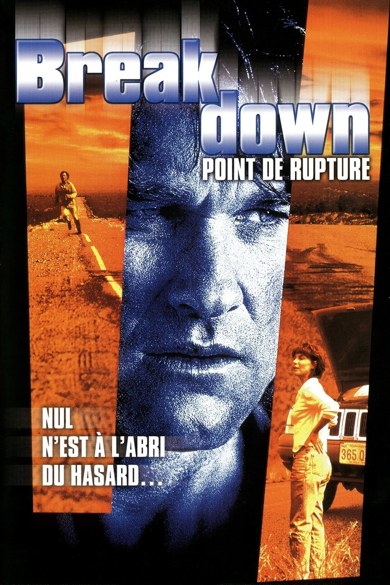
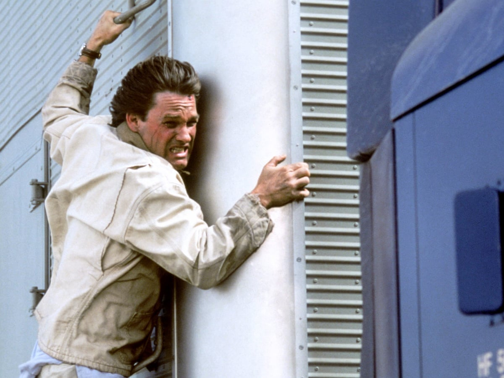
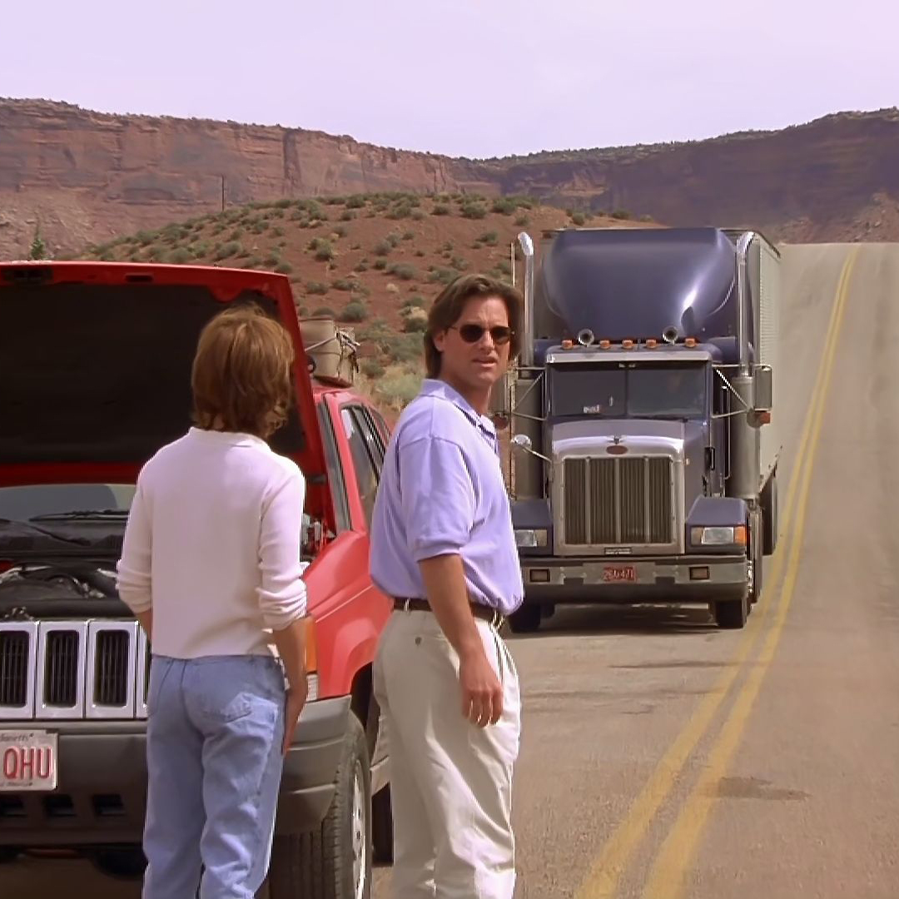

Celui-là, je ne l'ai pas trouvé par hasard un lundi soir sur M6.
Je l'ai trouvé en creusant la filmographie de Kurt Russell, parce qu'il fallait un fil rouge pour cette saison, et que la sienne traverse les décennies sans jamais vraiment se répéter.
Le titre ne m'a rien évoqué de particulier. Mais le synopsis, lui, a tout de suite accroché quelque chose — un homme ordinaire, une femme qui disparaît, un désert, et personne autour de lui pour le croire.
Et puis il y avait cette curiosité, plus précise encore : Kurt Russell sans les gadgets, sans le charisme d'action qui porte d'habitude ses films. Un type simplement dépassé par ce qui lui arrive. Je voulais voir s'il pouvait être crédible dans ce registre-là.
Ce soir, on sort la cassette.

Breakdown — affiche française, 1997
Breakdown.
1997. Réalisé par Jonathan Mostow. Avec Kurt Russell, Kathleen Quinlan et J.T. Walsh.
Le premier long métrage pour le cinéma de Mostow — un réalisateur qui signera plus tard U-571 et Terminator 3, mais qui débute ici avec quelque chose de beaucoup plus resserré. Un thriller routier tourné avec peu de décors, peu de personnages, et une tension qui monte par paliers plutôt que par explosions.
Produit par Paramount et Spelling Films, sorti en salles en mai 1997.
Pas de scène d'action au sens où on l'entend dans le reste de cette programmation. Juste un homme, une route, et la certitude que quelque chose ne tourne pas rond.
Breakdown tient sa promesse.
1997.
Le thriller américain vit une mutation. Seven, sorti deux ans plus tôt, a redéfini les attentes du genre — ambiance urbaine, noirceur psychologique, mise en scène stylisée. Le public commence à associer "thriller marquant" avec "esthétique sombre et scénario retors".
Jonathan Mostow prend le contre-pied complet.
Pas de ville. Pas de tueur en série. Un désert écrasant de lumière, une autoroute déserte, une menace qui se construit par l'absence plutôt que par l'excès. Mostow coécrit le scénario avec Sam Montgomery, en s'inspirant d'une prémisse simple — la peur primitive de tomber en panne seul, loin de tout, et de dépendre de la gentillesse d'inconnus.
Kurt Russell arrive sur ce projet juste après Escape from L.A. et la même année qu'Executive Decision. Pour un acteur associé à des figures d'action charismatiques, jouer un homme dépassé, terrifié, sans aucune compétence particulière, est un choix délibéré à contre-emploi.
Face à lui, J.T. Walsh — habitué des seconds rôles inquiétants depuis A Few Good Men et Nixon — livre une performance d'une duplicité redoutable, tout en sourires et en fausse bonhomie.
Le tournage se déroule en grande partie dans le désert du Nevada et de l'Utah — une chaleur réelle, une lumière réelle, aucun artifice pour adoucir l'isolement.

Kurt Russell — Breakdown, 1997
Jeff et Amy Taylor traversent le pays en voiture, direction la Californie pour un nouveau départ.
Sur une route isolée du désert, leur véhicule tombe en panne. Un routier providentiel, Red Barr, s'arrête. Le geste semble anodin — il propose d'emmener Amy jusqu'au prochain relais pendant que Jeff reste avec la voiture et tente de la réparer.
Amy monte dans le camion. Jeff la regarde s'éloigner.
Quand la voiture redémarre enfin, Jeff rejoint le relais routier convenu. Sa femme n'y est pas. Personne ne l'a vue. Et quand il retrouve Red Barr, celui-ci nie catégoriquement l'avoir jamais rencontrée.
Ce qui commence comme un malentendu embarrassant devient, minute après minute, quelque chose de bien plus sombre. Personne ne le croit. Personne ne veut l'aider. Et Jeff comprend qu'il va devoir mener l'enquête seul, dans un territoire hostile, contre des gens qui savent exactement ce qu'ils font.
Ce n'est pas un homme d'action qui va sauver sa femme.
C'est un homme ordinaire qui n'a plus le choix.
Breakdown fonctionne sur un mécanisme presque hitchcockien — l'homme innocent que personne ne croit.
Mais Mostow pousse le principe plus loin. Il ne s'agit pas seulement de convaincre les autres. Le film prend le temps de faire douter Jeff lui-même — et le spectateur avec lui. A-t-il mal vu ? A-t-il mal compris ? Le doute s'installe avant la certitude, et c'est cette progression lente qui donne au film sa tension particulière.
Le désert n'est pas un simple décor. Il est un antagoniste à part entière — un espace qui isole, qui expose, qui ne laisse aucun endroit où se cacher ni personne vers qui se tourner. La chaleur, la lumière crue, les longues lignes droites de l'autoroute participent activement à l'angoisse.
Kurt Russell trouve dans ce rôle un registre qu'on ne lui connaît pas dans cette programmation — la vulnérabilité pure. Jeff Taylor n'a ni arme, ni plan, ni compétence martiale. Il n'a que sa détermination et une colère qui grandit à mesure que la situation se dégrade. Russell rend cette transformation crédible sans jamais forcer le trait.
Et J.T. Walsh, en face, incarne une menace d'autant plus efficace qu'elle porte un sourire. Red Barr n'élève jamais la voix. Il n'a pas besoin de ça. Sa duplicité tranquille est plus terrifiante que n'importe quelle explosion de violence.
Breakdown est un thriller qui refuse tous les artifices du genre.
Il n'en a pas besoin.

Désert de l'Utah — la panne, point de départ du film
Breakdown est sorti au pire moment possible pour un thriller de cette sobriété.
1997 est saturé de thrillers post-Seven qui misent tout sur l'esthétique sombre et le twist retors — Kiss the Girls, Fallen sortiront dans la foulée. Face à ces productions plus stylisées, plus ostensiblement "sombres", Breakdown paraît presque modeste. Pas de tueur en série cérébral, pas de mise en scène tape-à-l'œil. Juste une route et un homme.
Cette sobriété, qui fait aujourd'hui toute la force du film, a probablement joué contre lui à l'époque. Le public cherchait du spectaculaire psychologique. Breakdown offre de la tension pure, sans fioriture — et ça se remarque moins dans une bande-annonce.
Le film obtient malgré tout un accueil critique honorable et des résultats commerciaux corrects, sans jamais devenir un phénomène. Il se glisse discrètement dans la filmographie de Kurt Russell, coincé entre deux films plus visibles — Executive Decision la même année, Escape from L.A. juste avant.
Et en France, sans tête d'affiche extrêmement vendeuse ni concept marketing fort, le film passe quasiment inaperçu.
Un thriller qui ne crie jamais fort.
Forcément, on l'entend moins.
Parce que c'est un des rares films où Kurt Russell joue un homme sans filet.
Pas de charisme d'action, pas de répartie, pas de compétence cachée qui va tout résoudre au dernier acte. Juste un homme normal, terrifié, obstiné — et une performance qui prouve que Russell savait aussi jouer l'absence de contrôle, pas seulement la maîtrise.
Parce que J.T. Walsh y livre une de ses dernières grandes performances, et probablement l'une de ses plus sous-estimées — un acteur de composition qui méritait d'être davantage célébré de son vivant.
Et parce que Breakdown appartient à une catégorie de thriller qu'on ne produit presque plus — le film qui fait confiance à une prémisse simple, à une exécution rigoureuse, et qui refuse la surenchère. Pas de rebondissement gratuit, pas de sous-intrigue superflue. Une ligne droite, tendue du début à la fin, comme la route qui la porte.
Dans le triptyque Kurt Russell de cette saison, Breakdown occupe une place à part — celle de l'homme ordinaire, sans arme ni plan, qui doit simplement refuser d'abandonner.
C'est peut-être le registre le plus difficile à jouer. Et Russell le tient du début à la fin.
Breakdown n'a pas besoin d'excuses pour exister.
C'est un thriller efficace, tendu, tenu par deux performances opposées — Kurt Russell qui perd pied et J.T. Walsh qui ne le lâche jamais du regard.
Il n'a simplement pas eu la chance de son époque. Trop sobre pour 1997, trop discret pour rivaliser avec les thrillers plus stylisés qui l'entouraient.
Deuxième étape du fil Kurt Russell de cette saison — après le contre-emploi criminel de Graceland, place à l'homme ordinaire en survie. Il en restera un troisième, plus tard, pour boucler la boucle.
En attendant, il y a ce désert, cette route, et cet homme qui refuse de rentrer chez lui sans sa femme.
La cassette est dans le lecteur. On rembobine.
Titre original
Breakdown
Pays
États-Unis
Genre
Thriller routier
Durée
95 min
Producteur
Paramount Pictures / Spelling Films
Avec aussi
Kathleen Quinlan · M.C. Gainey
Fil conducteur
Kurt Russell — Saison 2
Note
Premier long métrage cinéma de Jonathan Mostow
Regarder l'épisode
SOMEDAY — S2 EP. 05